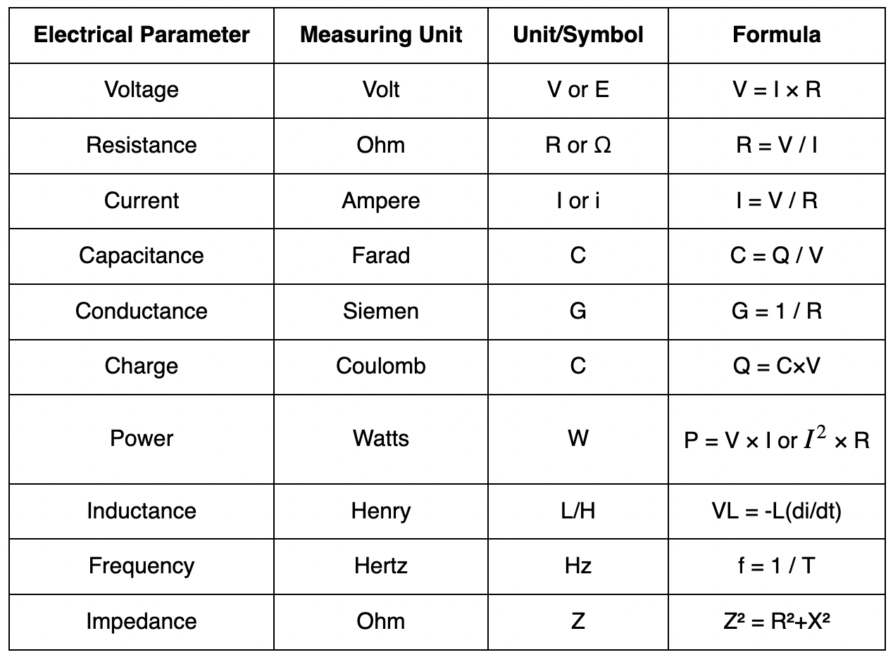
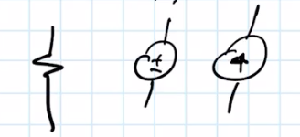
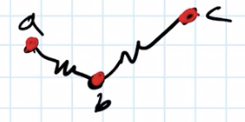
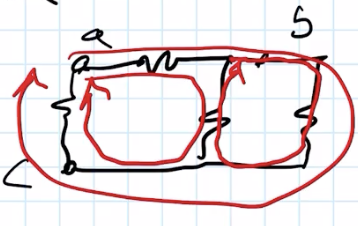
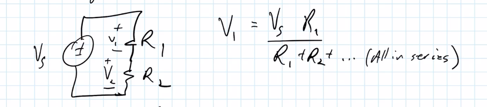

aIntro to Circuts <-1> Units PrefixesaT tera- e 12G giga- e 9M mega- e 6k kilo- e 3----------------m milli- e -3𝜇 micro- e -6n nano- e -9p pico- e -12

<0> Electricity ai: Current (Amps| A ) i=dq
dt 1 mAh = 2.24694351e19 qq: Charge V: Voltage (Volts| V )U: Energy (Joules| J )P: Power (Watts| W )( J/s )Electrons are negative charge[Charge]Is a force between objects, that, like gravity, acts at a distance. Opposite types of charge attract, and like types of charge repel. Gravity has only one type: it only attracts, never repels.-|+ Attracts+|+ Repels-|- Repels[Conductors and Insulators]Conductors are made of atoms whose outer electrons have a weak bond to their nuclei. A very small electric force can make the electron swarm move.Insulators are materials whose outer electrons are tightly bound to their nuclei. Modest electric forces are not able to pull these electrons free.Resistors fall between insulators and conductors. They usually act like insulators, but we can make them act like conductors under certain circumstances.[Current]Current is the number of charges per unit time passing through a boundary.
Positive current is in the direction positive charges would flow. Thus it's the oppisite direction of electron flow.It can be expressed mathematically using the following equation: i=Q
T=charge
secondDC = i(t) = AC = i(t) = [Voltage]Voltage resembles gravity. It is Potential Energy.The greater the voltage, the greater the potential energy.
We can express this mathmatically as: V=𝛥U
q=Potential Energy
per chargeThis basically represents how far a charge will travel.[Power]Power is energy over time.We measure power in units of joules/second, also known as watts. P=dU
dt=V i <1> Basic Circuts [Power Source] Voltage Source Current Source Static Voltage Value ie. V=2V Static Current Level ie. I=2ADependant Voltage Source Dependant Current Source Voltage based off equasion Current based off equasion[Resistor] Resistor=Resistivity ·length of substance
diameter of substance Resistors are a bottleneck that limits the amount of current that can flow through. They are mesured in Ohms.[Ohm's Law] V=IR Pabsorbed by resistor=IV=I2R=V2
RV: voltageI: CurrentR: Resistance <2> Branches Nodes Loops [Branches] Any circut element

[Nodes]Branch connection points

[Loops]Any closed path around the circut

<3> KCL/KVL [KCL] (conservation of charge)Charge cannot be created or destroyed.For any closed surface Current in = Current outIn practice, take any NODE OR SURFACE and make an equasion. ⟹ KCL node x: 3A+2A=GAfor a whole circit, it becomes a system of equasions ⟹ aKCL node x: 3A+2A=GAnode y: GA=2.5A+???This can be simplified through surfaces. ⟹ aKCL Surface 1: 3A+2A=2.5A+???[KVL] (conservation of voltage)For any loop, the sum of all voltage in the circut is 0.Remember, voltage is potential energy.Circuts will always hit this eqlibrium that the supply = resistance. ⟹ aKVL Vx+Vy-5V=05 Ix+5 Iy= 5V (←ohms law)aKCL node b: Ix=Iy <4> Basic [Equivalent Resistance]⋙ Resistors in parallela1
Req=1
R1+1
R2+1
R3···⟹ for 2 resistors Req=R1R2
R1+R2⋙ Resistors in seriesReq=R1+R2+R3...[Voltage Division]

... Beyond this point is unfinished <later> etc [Capacitor] [Inductor]